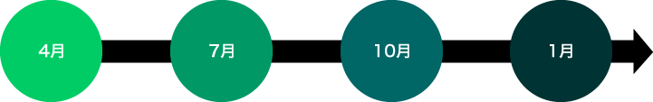

短期日本語コース
すでに日本に滞在している方や日本に滞在できるビザをお取りになれる方は、随時入学が可能です。
ただし、より効果的に日本語の学習を進めるためにも、正規コースと合わせて、1月・4月・7月・10月にスタートなさることをお勧めします。
スケジュール及び料金は正規コースとは異なりますのでお問い合わせください。
短期日本語コース入学可能時期


短期日本語コースの時間割
| 午前 | 午後 | |
|---|---|---|
| 1限目 | 9：00～9：45 | 13：30～14：15 |
| 2限目 | 9：45～10：30 | 14：15～15：00 |
| 3限目 | 10：50～11：35 | 15：20～16：05 |
| 4限目 | 11：35～12：20 | 16：05～16：50 |
※授業は午前または午後のいずれかです。
※授業時間は、クラスによって決まります。
※プライベートレッスン・サマーコースについては、授業時間が異なります